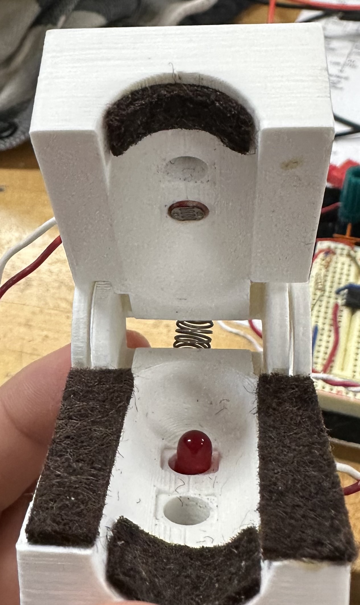
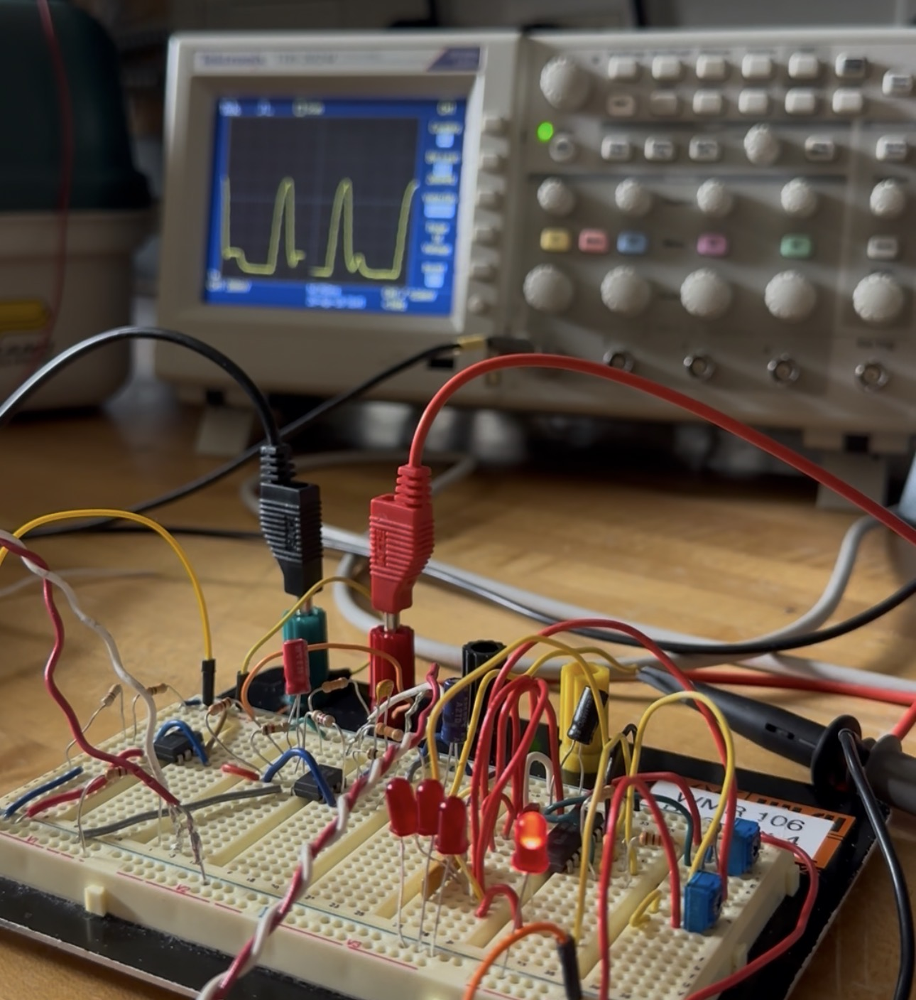
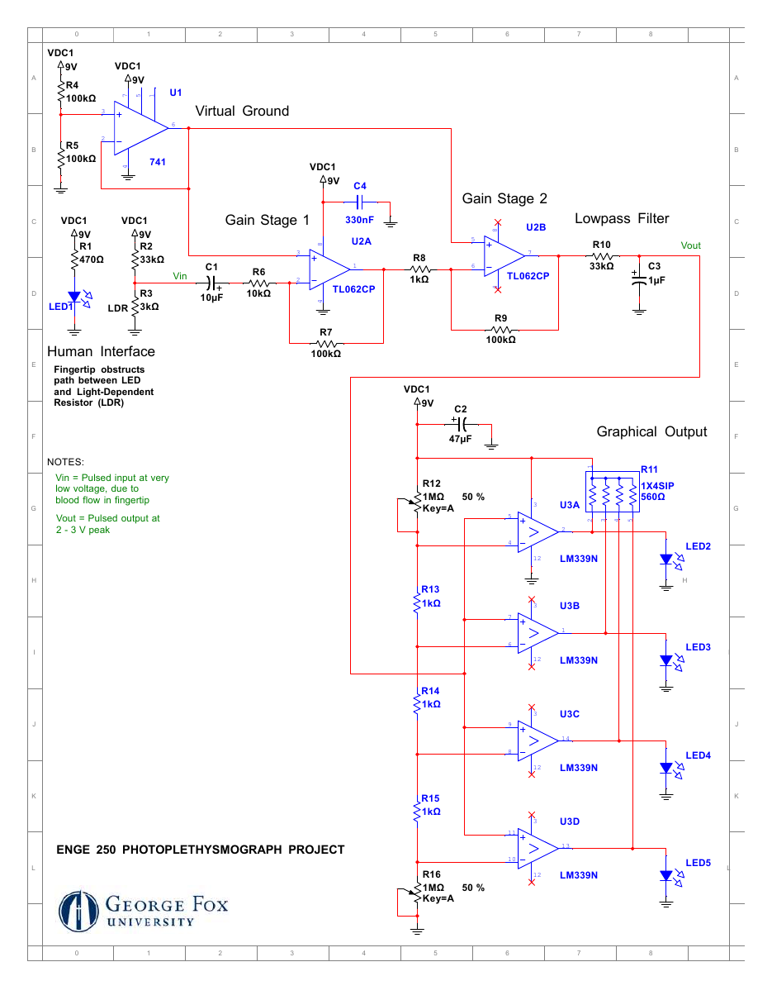
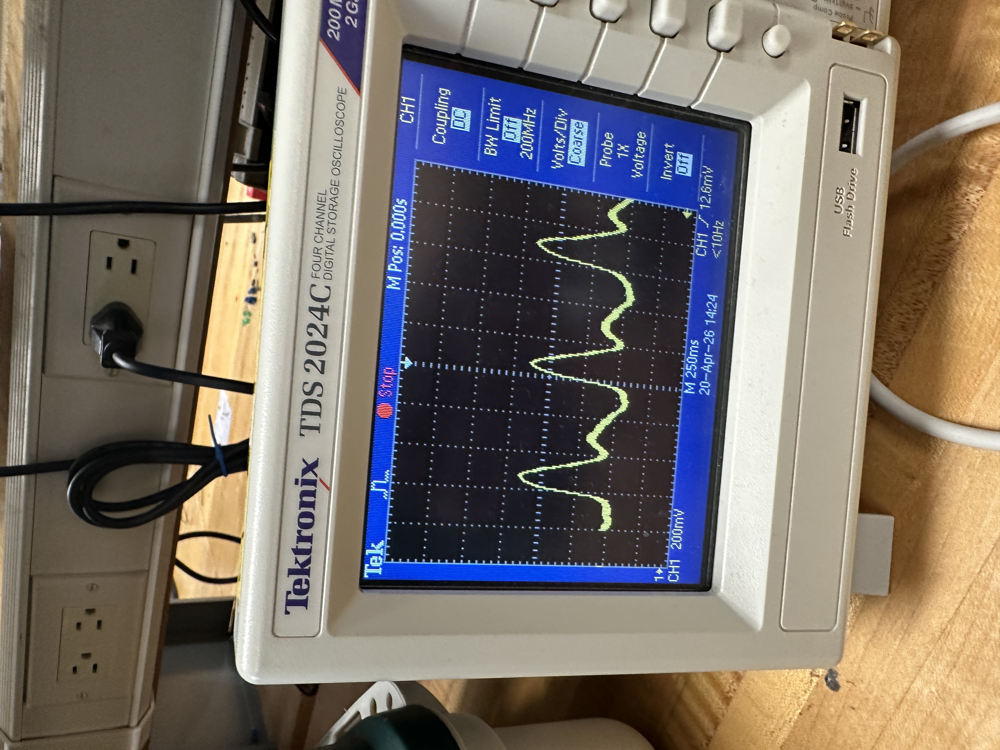

Project Overview
The goal of this project was to measure a photoplethysmography (PPG) signal from a fingertip. PPG uses changes in light passing through tissue to observe the small variations associated with blood flow during each heartbeat.
I built and tested an analog circuit to amplify and filter the sensor signal, then used comparators to drive an LED display. I observed the resulting pulse waveform on an oscilloscope.
Sensor & Circuit Design
A 3D-printed, spring-loaded clamp holds a fingertip between an LED and a light-dependent resistor (LDR). Changes in blood volume alter the light reaching the LDR, changing its resistance and the voltage produced by the sensor divider. The clamp helps position the sensor and reduce outside light.
Optical Sensing
An LED and light-dependent resistor form the fingertip sensing interface.
Amplification
A buffered 4.5 V virtual ground provides a reference for two inverting op-amp stages powered by a single 9 V supply.
Filtering
A coupling capacitor removes the DC component; an RC low-pass filter reduces high-frequency noise.
Visual Output
A resistor ladder and adjustable comparator thresholds drive LEDs as the pulse voltage changes.


Circuit Schematic
The circuit uses a buffered midpoint reference and two inverting gain stages with theoretical gains of -10 and -100. The 33 kΩ / 1 µF low-pass filter has a calculated cutoff of 4.82 Hz. A resistor ladder and adjustable thresholds feed four comparators for the LED display.

Testing & Result
Fingertip Pulse Detection
The completed circuit produced a repeating pulse waveform visible on the oscilloscope. The demonstration shows the sensor, circuit, and output working together.
Testing showed how the circuit's actual performance compared with its calculated behavior. A 1.2 Hz test signal produced an overall gain of approximately 635 V/V, below the theoretical gain of 1,000 V/V. The finished circuit nevertheless produced a clear pulse waveform from the fingertip sensor.

Challenges & Improvements
The measured gain was lower than the theoretical value, particularly in the second stage. Increasing resistor ratios and trying another IC produced little improvement in the pulse output, so I looked at the sensor setup as well as the amplifier.
Ambient light and finger movement had a clear effect. The output reached about 1.5–2.0 V peak in darkness, compared with roughly 0.8–1.0 V peak during earlier testing. Careful finger placement and potentiometer adjustment also improved the LED display. These observations pointed to light leakage and signal stability as important limitations.
A better light-sealed clamp with more consistent finger positioning would improve the sensor interface. A PCB could also provide more consistent connections than the breadboard, making a small-signal circuit easier to troubleshoot.
What I Learned
This project brought circuit analysis into a practical measurement system. I gained experience with optical sensing, virtual grounds, op-amp gain, filtering, comparator thresholds, and oscilloscope measurements. Comparing calculations with the working circuit also showed me the importance of testing the sensor and its surroundings alongside the electronics.